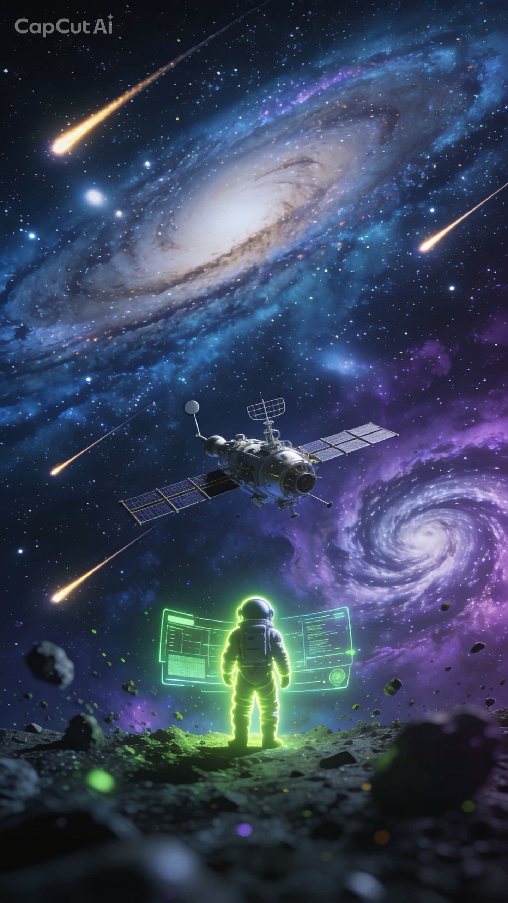
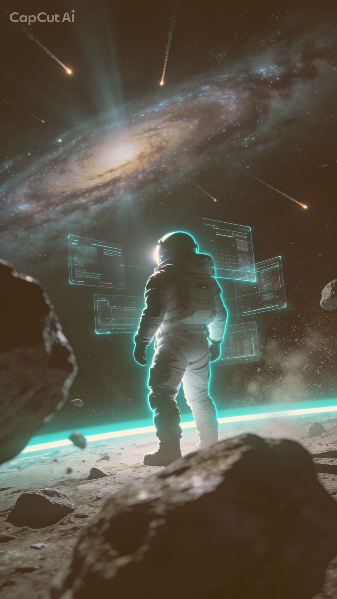
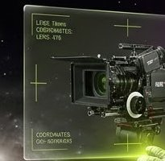
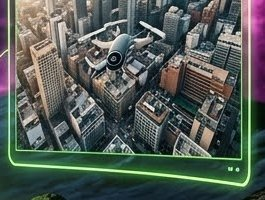

"Nosso vídeo foi o vídeo com maior visualização na história de nosso município."


Porto Alegre · Rio Grande do Sul
A Voy transforma ideias em imagens que ficam.
Somos uma produtora audiovisual em crescimento no Rio Grande do Sul, com tecnologia de ponta e uma equipe que vive para contar histórias.
Já ajudamos marcas como
- Globo
- Dell
- Cyrela
- Melnick
- CCR
- Bud
- Igui
- ATM
- Net
- Branri
- Chilli
a comunicarem o que realmente importa: com criatividade, estratégia e resultado.
Da órbita para Porto Alegre.

Câmera · lentes de cinema
Captação aérea
0mil
produções realizadas
0
marcas atendidas
0anos
de experiência
Vozes
Quem já voou com a gente.
Depoimentos reais, tirados do site atual da Voy.
"Rafael Vargas é um estúdio ambulante de criatividade, com muita competência e profissionalismo."
"Desafiei o Rafael a atualizar nossa marca. Ele conseguiu inová-la sem tirar a sua essência."
"A Voy criou toda identidade visual e um website de altíssima qualidade, tudo entregue super rápido."
"Vídeo para minha empresa ficou perfeito e me ajudou muito nas vendas."
"Já fizemos diversos vídeos e videoclipes juntos e a qualidade é sempre brutal."